W3C 的 HTML4.01 属性表里 nowrap 一行中，标示的 "相关元素" （Related Elements）为 TD 和 TH。 depr 一列则表明这个属性已经被弃用（deprecated）。所以这是一个不推荐使用的属性，即便要使用，它也应专用于表格单元格元素 TD 与 TH。
HTML4.01 规范中也明确说明了 nowrap 属性的意义：nowrap 属性是一个布尔型属性，用于设置当前单元格的文字环绕。目前应使用CSS代替此属性，若使用不当，此属性可能导致单元格过宽。
对于 DOM 中 HTMLTableCellElement 对象接口中的 noWrap 属性的意义同上。
关于 noWrap 的详细信息，请参考 W3C HTML4.01 规范 11.2.6 Table cells 以及 DOM2 (HTML) 规范 1.6.4 The HTMLElement interface 中的内容。
HTML4.01 属性表，请参考：http://www.w3.org/TR/html401/index/attributes.html。
在 IE 中，不仅 TD 和 TH 元素，其他一些元素也拥有 noWrap 属性。
各浏览器之间对于 noWrap 属性的应用范围不同，可能导致当使用此属性时，不同浏览器针对空白符的处理会有完全不同的展现效果。
| IE6 IE7 IE8(Q) | 除 TD 和 TH 元素以外，还支持 BODY、DIV、DD、DT 元素上的 noWrap 属性。 |
|---|
查看 MSDN 文档关于 NOWRAP Attribute |
noWrap Property 的介绍：
在 HTML 中，nowrap 属性可以作用于 BODY、DD、DT、DIV、TD、TH 元素。而在 DOM
中，HTMLBodyElement、HTMLDDElement、HTMLDivElement、HTMLDTElement、HTMLTableCellElement 这些对象拥有 noWrap 属性。
分析以下代码：html_nowrap.html
<!DOCTYPE html> <html> <head> <style> .nr { background:#ddd; } </style>
</head> <body> <table style="width:120px;" border="1"> <tr> <th class="nr"
nowrap>TH: </th> </tr> <tr> <td class="nr" nowrap>TD: </td> </tr> </table> <div class="nr"
style="width:120px;" nowrap>DIV: </div> <h3 class="nr"
style="width:120px;" nowrap>H3: </h3> <p class="nr"
style="width:120px;" nowrap>P: </p> <dl> <dt id="dt"
class="nr" style="width:120px;" nowrap>DT: </dt> <dd class="nr"
style="width:120px;" nowrap>DD: </dd> </dl> <script>
window.onload = function() { function getComputedStyle($target, styleName) { return document.defaultView
? document.defaultView.getComputedStyle($target, null).getPropertyValue(styleName) :
$target.currentStyle[styleName.replace(/-[a-z]/g, function() { return
arguments[0].charAt(1).toUpperCase(); })]; } var a = document.getElementsByTagName("*"), b, html; for
(var i = 0; i < a.length; i++) { if (a[i].className == "nr") { html = "<span>" +
getComputedStyle(a[i], "white-space") + "</span>"; a[i].innerHTML += "white-space:" + html; b =
a[i].children(0); b.style.color = (b.innerHTML == "nowrap") ? "red" : "blue"; } } } </script>
</body> </html>
以上代码分别测试了 TH、TD、DIV、H3、P、DT、DD 元素的 noWrap 属性，并取得各元素计算后的 'white-space' 特性的值，在各浏览器中效果如下：
| IE61 IE7 IE8(Q) | IE8(S) Firefox Chrome Safari Opera | |
|---|---|---|
| TH TD | ||
| DIV | 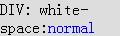 | |
| H3 | 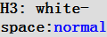 | 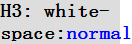 |
| P | 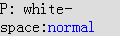 | 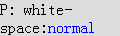 |
| DT DD | 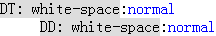 | 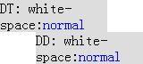 |
通过上例对 'white-space' 特性计算后的值的检测，可以发现所有浏览器均将带有 nowrap 属性的 TD 和 TH 元素的 'white-space' 特性值设定为 nowrap。
虽然 IE6 IE7 IE8(Q) 中 nowrap 属性也可以作用于 DIV 等元素，但他们的 'white-space' 特性的计算后的值仍然为 normal。
【注】
1. IE6 IE7(Q) IE8(Q) 的截图与 IE7(S) 稍有不同，这是因为它们有 "子元素可以撑大父容器" 的 Bug，但这并不影响浏览器对 nowrap 属性的解释。
下面单独测试 BODY 元素的 nowrap 属性：
这里将 BODY 元素单独提出来分析，是因为 nowrap 属性在 IE 中拥有继承特性，为 BODY 元素设置 nowrap 属性将会影响到其内子元素的 'white-space' 特性的计算值，即使子元素是 P、H1 这些在 IE 中不具备 nowrap 属性的元素。
分析以下代码：html_body_nowrap.html
<!DOCTYPE html> <html> <head> <style> .nr { background:#ddd; } </style>
</head> <body style="width:120px;" nowrap> <span>BODY:
</span> <h4 id="h4" class="nr" style="width:120px;">H4: </h4> <p id="p" class="nr"
style="width:120px;">P: </p> <script> window.onload = function() { function $(id) {
return document.getElementById(id); } function getComputedStyle($target, styleName) { return
document.defaultView ? document.defaultView.getComputedStyle($target, null).getPropertyValue(styleName)
: $target.currentStyle[styleName.replace(/-[a-z]/g, function() { return
arguments[0].charAt(1).toUpperCase(); })]; } document.body.children(0).innerHTML += "white-space:" +
getComputedStyle(document.body, "white-space"); $("h4").innerHTML += "white-space:" +
getComputedStyle($("h4"), "white-space"); $("p").innerHTML += "white-space:" + getComputedStyle($("p"),
"white-space"); } </script> </body> </html>
上面代码中为 BODY 元素设置了 nowrap 属性，BODY 元素内包含两个块级元素 H4 和 P，这两个元素在所有浏览器中均不具有 nowrap 属性。
在各浏览器中效果如下：
| IE61 IE7 IE8(Q) | IE8(S) Firefox Chrome Safari Opera |
|---|---|
| 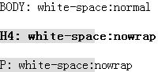 | 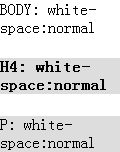 |
截图中不仅看出 BODY 元素在 IE6 IE7 IE8(Q) 中拥有 nowrap 属性，且这个属性还会对其子元素的 'white-space' 特性产生影响。
下面再看看在各浏览器中 TH、TD、DIV、H3、P、DT、DD 元素对应的 DOM 对象的是否拥有合法的 noWrap 属性。
分析以下代码：dom_nowrap.html
<!DOCTYPE html> <html> <head> <style> .nr { background:#ddd; } </style>
</head> <body> <table style="width:120px;" border="1"> <tr> <th
class="nr">TH: </th> </tr> <tr> <td class="nr">TD: </td> </tr>
</table> <div class="nr" style="width:120px;">DIV: </div> <h3 class="nr"
style="width:120px;">H3: </h3> <p class="nr" style="width:120px;">P: </p>
<dl> <dt id="dt" class="nr" style="width:120px;">DT: </dt> <dd class="nr"
style="width:120px;">DD: </dd> </dl> <script> window.onload = function() { var a =
document.getElementsByTagName("*"), html; for (var i = 0; i < a.length; i++) { if (a[i].className ==
"nr") { html = typeof a[i].noWrap != "undefined" ? "Yes" : "No"; a[i].noWrap = true; a[i].innerHTML +=
"DOM noWrap:" + html; } } } </script> </body> </html>
若被考察元素的 DOM 对象默认拥有 noWrap 属性，则 typeof 返回的字符串应该为 boolean，否则为 undefined。再设置该对象的 noWrap 属性为 true，若该对象支持 noWrap 属性，则可以看到其内容为空白符不换行的处理效果。
在各浏览器中效果如下：
| IE6 IE7 IE8(Q) | IE8(S) | Firefox Chrome Safari Opera |
|---|---|---|
| 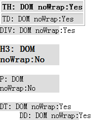 | 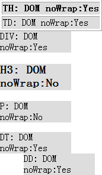 | 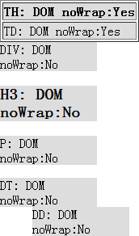 |
忽略 IE8(S)，其他浏览器中对 DOM 对象的 noWrap 属性检测结果与之前为标签设置 nowrap 属性的情况一直。
但是在 IE8(S) 中，DIV、DD、DT 元素对应的 DOM 对象的 noWrap 属性 typeof 返回值也为 boolean，而不是非 IE 浏览器中的 undefined，可见在 IE8(S)
中，那些在早期 IE 版本中具备 nowrap 属性的 HTML 元素在其对应的 DOM 对象中的 noWrap 属性仍然为有效的，只不过对其进行设置后并不能影响该元素在 IE8(S) 中的渲染效果。
下面还是单独测试 BODY 元素：dom_body_nowrap.html
<!DOCTYPE html> <html> <head> <style> .nr { background:#ddd; } </style>
</head> <body> <p id="p" style="width:120px;" class="nr"></p> <script>
window.onload = function() { function $(id) { return document.getElementById(id); } var html = typeof
document.body.noWrap != "undefined" ? "Yes" : "No"; $("p").innerHTML = "BODY: DOM noWrap:" + html;
document.body.noWrap = true; } </script> </body> </html>
在各浏览器中效果如下：
| IE6 IE7 IE8(Q) | IE8(S) | Firefox Chrome Safari Opera |
|---|---|---|
BODY 元素的测试结果与上例中一致。
nowrap 属性是被废弃的属性，使用 CSS 规则 white-space:nowrap 代替这个属性。
| 操作系统版本: | Windows 7 Ultimate build 7600 |
|---|---|
| 浏览器版本: |
IE6
IE7 IE8 Firefox 3.6.6 Chrome 6.0.458.1 dev Safari 5.0 Opera 10.60 |
| 测试页面: |
html_nowrap.html
html_body_nowrap.html dom_nowrap.html dom_body_nowrap.html |
| 本文更新时间: | 2010-07-13 |
noWrap white-space TABLE DIV 折行 TD TH 单元格